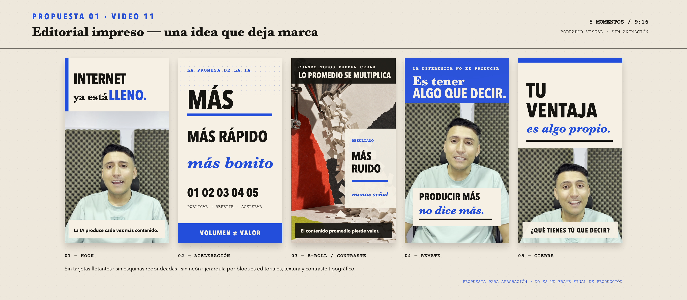

01
Aprobada
Fundamentos
Editorial impreso
Convierte una idea educativa en una portada y una secuencia editorial de alta autoridad.
marketingmarcacontenidoautoridadeducación
Ver características
- Ángulo
- Claridad editorial y autoridad.
- Motivación
- Comprensión y confianza.
- Lenguaje visual
- Retícula de revista, placas oscuras, titulares grandes y acentos rosa/cian.
- Estructura narrativa
- Pregunta frontal → dato o tensión → contraste → síntesis → llamada a la acción.
- Regla para extender
- Añadir páginas como portada, dato, cita, ejemplo, síntesis y cierre sin cambiar la retícula.
- Accesibilidad
- Texto esencial sobre superficie estable, jerarquía clara, información no dependiente solo del color, subtítulos revisados y movimiento reducible.
- Ideal para
- Explicaciones, datos, opinión profesional y educación de negocio.
- Métrica principal
- Retención por bloque y guardados.